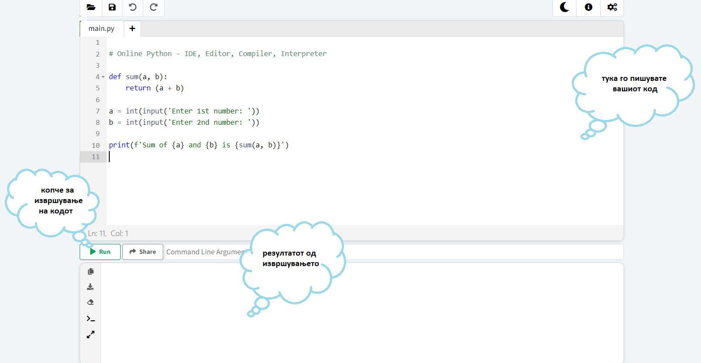

Добредојдовте на курсот за Python за почетници!
Дали сте подготвени да досигнете нови височини? PyStairs ќе ве воведат во светот на програмирањето. Чекор по чекор ќе се запознаете со синтаксата, структурата и основните концепти во Python.
За да може да започнеме со програмирање најпрвин треба да обезбедите околина на која ќе може да го извршувате кодот кој ќе го пишувате. Постојат неколку опции на располагање за да го напишете и извршите вашиот Python-код: инсталирање на интегрирана развојна околина (IDE), користење на Local Python Environment или користење на Online Code Editor. За почеток наједноставно е да коритите Online Code Editor бидејќи обезбедува пишување и извршување програми директно на вашиот прелистувач.
На следниот линк може да пристапите до еден Online Code Editor. Во првиот дел може да го пишувате вашиот код. За извршување на кодот треба да притиснете на копчето Run, а резултатот од програмата ќе се појави во долниот прозорец. Погледнете ја сликата во продолжение.
А сега дали сте подготвени да го направите првиот чекор?
Среќно кодирање!
Тимот на PyStairs